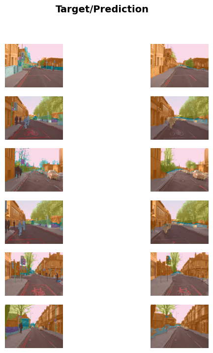

from google.colab import drive
drive.mount("/content/gdrive")Mounted at /content/gdrive
First, we need to setup an access to Google Drive. This is to persist data or artifacts in a local drive even when we are not connected to Google Colab.
from google.colab import drive
drive.mount("/content/gdrive")Mounted at /content/gdriveThen, install ipywidgets and fastai as necessary dependencies and import them.
!python -m pip install -Uqq ipywidgets fastai ━━━━━━━━━━━━━━━━━━━━━━━━━━━━━━━━━━━━━━━━ 139.4/139.4 kB 1.8 MB/s eta 0:00:00
━━━━━━━━━━━━━━━━━━━━━━━━━━━━━━━━━━━━━━━━ 2.3/2.3 MB 12.8 MB/s eta 0:00:00
━━━━━━━━━━━━━━━━━━━━━━━━━━━━━━━━━━━━━━━━ 1.6/1.6 MB 16.3 MB/s eta 0:00:00from fastai.vision.all import *
from fastai.text.all import *
from fastai.tabular.all import *
from fastai.collab import *This is a starting point to your deep learning journey. Before we dive into what you need to know about it and how, it is important to talk about Why?.
This is a simplified verison of ANNs history that you will help you contextualize on what we have been through and learn to not repeat some of it!
flowchart LR;
A[Artificial Neurons] -- Unrecognized social position --> B[Perceptrons] -- Failure to learn simple XOR --> C[PDP] -- Approximation with one extra layer --> D[Modern ANNs];
Basically, what researchers have tried to do since 1943 is to develop a mathematical model of an artificial neuron inspired by the human brain. Although there are several years of misunderstanding of the theoretical issues, we still have multi-volume Parallel Distributed Processing (PDP) which acts as a backbone of modern ANNs. Here is the required components for this framework:
Again, thanks to the use of more layers, together with the improvement in hardware capability, the increase amount of data and algorithmic tweaks that allow neural networks to be trained faster and more easily, We now are able to complete complex tasks like an image recognizer by a only computer.
Let’s implement PDP framework in practice by using a pre-trained model to complete a task; an image recognizer perhaps. Here is what about to happen:
path = untar_data(URLs.PETS)/'images'
is_cat = lambda x: x[0].isupper()
dls = ImageDataLoaders.from_name_func(
path, get_image_files(path), valid_pct=0.2, seed=42,
label_func=is_cat, item_tfms=Resize(224))
learn = vision_learner(dls, resnet34, metrics=error_rate)
learn.fine_tune(1)Downloading: "https://download.pytorch.org/models/resnet34-b627a593.pth" to /root/.cache/torch/hub/checkpoints/resnet34-b627a593.pth
100%|██████████| 83.3M/83.3M [00:00<00:00, 90.6MB/s]| epoch | train_loss | valid_loss | error_rate | time |
|---|---|---|---|---|
| 0 | 0.163383 | 0.030820 | 0.012179 | 00:48 |
| epoch | train_loss | valid_loss | error_rate | time |
|---|---|---|---|---|
| 0 | 0.055516 | 0.037565 | 0.012855 | 01:00 |
Depending on your network speed, it might take a few minutes to download the pretrained model and dataset. Running fine_tune might take a minute or so. Often models in this book take a few minutes to train, as will your own models, so it’s a good idea to come up with good techniques to make the most of this time. For instance, keep reading the next section while training your model, or open up another notebook and use it for some coding experiments.
After we have trained the model, we need to check if it can do something useful right? There are several ways we can do. The first way is to create an uploader for an interaction. This way is the simplest and suitable for users similiarized with GUI.
from ipywidgets import FileUpload
# This should prompt a uploader UI for file attachment
uploader = FileUpload()
uploaderOr you can just past in a download link to download_image function provided by fastai library.
dest = Path("gdrive/My Drive/practical-deep-learning/bin/")
download_images(dest, urls=["https://i.icanvas.com/COC490?d=3&sh=v&s=xl&p=1&bg=g&t=1648830566"])img = PILImage.create("/content/gdrive/MyDrive/practical-deep-learning/bin/75083824-ac57-46d2-acdb-2e0678aba62f.jpg")
img.to_thumb(224)is_cat, _, probs = learn.predict(img)
print(f"Is this a cat?: {is_cat}.")
print(f"Probability it's a cat: {probs[1]:.4f}")Is this a cat?: False.
Probability it's a cat: 0.0357As you can see, the model can correctly classify even an image has some part that is not a dog! This is the power of a pre-trained model.
But what does it actually doing? we will have a look more closer into the code.
Let’s look through the code first.
untar_data function has downloaded a standardard dataset from the fast.ai datasets collection (if not previously downloaded) to your server, extracts it (if not previously extracted), and returns a Path object with the extracted location:
path = untar_data(URLs.PETS)/'images'Next, we define a function, is_cat, which labels cats based on a filename rule provided by the dataset creators:
is_cat = lambda x: x[0].isupper()Then, we need to tell fastai what kind of dataset we have and how it is structured:
dls = ImageDataLoaders.from_name_func(
path, get_image_files(path), valid_pct=0.2, seed=42,
label_func=is_cat, item_tfms=Resize(224))There are various different classes for different kinds of deep learning datasets and problems—here we’re using ImageDataLoaders. The first part of the class name will generally be the type of data you have, such as image, or text.
The other important piece of information that we have to tell fastai is how to get the labels from the dataset. Computer vision datasets are normally structured in such a way that the label for an image is part of the filename, or path—most commonly the parent folder name. fastai comes with a number of standardized labeling methods, and ways to write your own. Here we’re telling fastai to use the is_cat function we just defined.
Finally, we define the Transforms that we need. A Transform contains code that is applied automatically during training; fastai includes many predefined Transforms, and adding new ones is as simple as creating a Python function. There are two kinds: item_tfms are applied to each item (in this case, each item is resized to a 224-pixel square), while batch_tfms are applied to a batch of items at a time using the GPU, so they’re particularly fast!
Why 224 pixels? This is the standard size for historical reasons (old pretrained models require this size exactly), but you can pass pretty much anything. If you increase the size, you’ll often get a model with better results (since it will be able to focus on more details), but at the price of speed and memory consumption; the opposite is true if you decrease the size.
The Pet dataset contains 7,390 pictures of dogs and cats, consisting of 37 different breeds. Each image is labeled using its filename: for instance the file great_pyrenees_173.jpg is the 173rd example of an image of a Great Pyrenees breed dog in the dataset. The filenames start with an uppercase letter if the image is a cat, and a lowercase letter otherwise. We have to tell fastai how to get labels from the filenames, which we do by calling from_name_func (which means that labels can be extracted using a function applied to the filename), and passing is_cat, which returns x[0].isupper(), which evaluates to True if the first letter is uppercase (i.e., it’s a cat).
The most important parameter to mention here is valid_pct=0.2. This tells fastai to hold out 20% of the data and not use it for training the model at all. This 20% of the data is called the validation set; the remaining 80% is called the training set. The validation set is used to measure the accuracy of the model. By default, the 20% that is held out is selected randomly. The parameter seed=42 sets the random seed to the same value every time we run this code, which means we get the same validation set every time we run it—this way, if we change our model and retrain it, we know that any differences are due to the changes to the model, not due to having a different random validation set.
Next, it tells `fastai to create a convolutional neural network (CNN) and specifies what architecture to use (i.e. what kind of model to create), what data we want to train it on, and what metric to use:
learn = vision_learner(dls, resnet34, metrics=error_rate)Why a CNN? It’s the current state-of-the-art approach to creating computer vision models. Their structure is inspired by how the human vision system works.
There are many different architectures in fastai, which we will introduce in the later lecture (as well as discussing how to create your own). Most of the time, however, picking an architecture isn’t a very important part of the deep learning process. It’s something that academics love to talk about, but in practice it is unlikely to be something you need to spend much time on. There are some standard architectures that work most of the time, and in this case we’re using one called ResNet that we’ll be talking a lot about during the book; it is both fast and accurate for many datasets and problems. The 34 in resnet34 refers to the number of layers in this variant of the architecture (other options are 18, 50, 101, and 152). Models using architectures with more layers take longer to train, and are more prone to overfitting (i.e. you can’t train them for as many epochs before the accuracy on the validation set starts getting worse). On the other hand, when using more data, they can be quite a bit more accurate.
What is a metric? A metric is a function that measures the quality of the model’s predictions using the validation set, and will be printed at the end of each epoch. In this case, we’re using error_rate, which is a function provided by fastai that does just what it says: tells you what percentage of images in the validation set are being classified incorrectly. Another common metric for classification is accuracy (which is just 1.0 - error_rate). There are many more to cover in the later lecture.
The concept of a metric may remind you of loss, but there is an important distinction. The entire purpose of loss is to define a “measure of performance” that the training system can use to update weights automatically. In other words, a good choice for loss is a choice that is easy for stochastic gradient descent to use. But a metric is defined for human consumption, so a good metric is one that is easy for you to understand, and that hews as closely as possible to what you want the model to do. At times, you might decide that the loss function is a suitable metric, but that is not necessarily the case.
vision_learner also has a parameter pretrained, which defaults to True (so it’s used in this case, even though we haven’t specified it), which sets the weights in your model to values that have already been trained by experts to recognize a thousand different categories across 1.3 million photos (using the famous ImageNet dataset). A model that has weights that have already been trained on some other dataset is called a pretrained model. You should nearly always use a pretrained model, because it means that your model, before you’ve even shown it any of your data, is already very capable. And, as you’ll see, in a deep learning model many of these capabilities are things you’ll need, almost regardless of the details of your project. For instance, parts of pretrained models will handle edge, gradient, and color detection, which are needed for many tasks.
When using a pretrained model, vision_learner will remove the last layer, since that is always specifically customized to the original training task (i.e. ImageNet dataset classification), and replace it with one or more new layers with randomized weights, of an appropriate size for the dataset you are working with. This last part of the model is known as the head.
Using pretrained models is the most important method we have to allow us to train more accurate models, more quickly, with less data, and less time and money. You might think that would mean that using pretrained models would be the most studied area in academic deep learning… but you’d be very, very wrong! The importance of pretrained models is generally not recognized or discussed in most courses, books, or software library features, and is rarely considered in academic papers.
Using a pretrained model for a task different to what it was originally trained for is known as transfer learning. Unfortunately, because transfer learning is so under-studied, few domains have pretrained models available. For instance, there are currently few pretrained models available in medicine, making transfer learning challenging to use in that domain. In addition, it is not yet well understood how to use transfer learning for tasks such as time series analysis.
Transfer learning: using a pretrained model for a task different to what it was originally trained for.
Here comes our training part. Our code tells fastai how to fit the model:
learn.fine_tune(1)As we’ve discussed, the architecture only describes a template for a mathematical function; it doesn’t actually do anything until we provide values for the millions of parameters it contains.
This is the key to deep learning—determining how to fit the parameters of a model to get it to solve your problem. In order to fit a model, we have to provide at least one piece of information: how many times to look at each image (known as number of epochs). The number of epochs you select will largely depend on how much time you have available, and how long you find it takes in practice to fit your model. If you select a number that is too small, you can always train for more epochs later.
But why is the method called fine_tune, and not fit? fastai actually does have a method called fit, which does indeed fit a model (i.e. look at images in the training set multiple times, each time updating the parameters to make the predictions closer and closer to the target labels). But in this case, we’ve started with a pretrained model, and we don’t want to throw away all those capabilities that it already has. There are some important tricks that we are going to learn throughout the course to adapt a pretrained model for a new dataset — a process called fine-tuning.
Fine-tuning: a transfer learning technique where the parameters of a pretrained model are updated by training for additional epochs using a similar task and dataset.
When you use the fine_tune method, fastai will use these tricks for you. There are a few parameters you can set (which we’ll discuss later), but in the default form shown here, it does two steps:
The head of a model is the part that is newly added to be specific to the new dataset. An epoch is one complete pass through the dataset. After calling fit, the results after each epoch are printed, showing the epoch number, the training and validation set losses (the “measure of performance” used for training the model), and any metrics you’ve requested (error rate, in this case).
Before going to the next section, we have already know what our code has been doing. That’s good!
But intuition behind it, it also important for you as there is the key you can use to adapt this code to any kind of problems.
In 2013 a PhD student, Matt Zeiler, and his supervisor, Rob Fergus, published the paper “Visualizing and Understanding Convolutional Networks”, which showed how to visualize the neural network weights learned in each layer of a model. They carefully analyzed the model that won the 2012 ImageNet competition, and used this analysis to greatly improve the model, such that they were able to go on to win the 2013 competition!
You can see pictures of each layer in their paper. So, I am going to summarize here:
As the layer go deeper, the model learns more sophiticated features.
This statement provides an inspiration to what neural networks do in what so called the “blackbox”. Also, it is a confirmation that neural networks themselves have the ability to learn feature on theirown. This gives us a lot of potential:
Now that we have learn deep learning through hands-on exercise, It is time to dig a lit bit deeper into it. We will start with Machine Learning.
This term is like a primitive to Deep Learning. What is means is that it is another paradiagm (as opposed to Traditional Programming) to get computers to complete a specific task. The key difference is here:
ML provides an ability for a computer to learn without explitcitly being programmed
Here is an introduction to machine learning that I find easily to get started. This blog includes the main concepts and its real-world examples.
Now, back to business, the basic of every traditional program should look like this:
flowchart LR;
A([inputs]) --> B[program] --> C([results]);
However, for tasks like image recognition. It is almost impossible for you as a programmer who write an instruction to turn inputs into results as we are human that can do it unconsciouly. Therefore, the new paradiagm to the problem comes in. Machine Learning seem like a good way to solve the problem but in reality how can we implement it.
Remember PDP framework? we need various components for a computer to utilize in order to acheive our goal. The concepts like “weight assignment” and “performance evaluation” have emerged though it is crucial for a computer to do it automatically. So, we also need some mechanism to provide the ability to automate the process of improvement and make sure that the model can do whatever it is required to do. Here is the summary of what it should be look like:
flowchart LR;
A([inputs]) --> C[model];
B([weights]) --> C[model];
C[model] --> D([results]);
D([results]) --> E([performance]);
E([performance]) -- update --> B([weights]);
Such mechanism keep the model going toward perfection as it iteratively update weights. Also note that once the model is finished training, the weight themselves act as a part of the model.
So, the simplfied version of it would be something which quite similar to what traditional programming is:
flowchart LR;
A([inputs]) --> B[model] --> C([results]);
Neural Network is just another algorithm for Machine Learning like Random Forest or Gradient Boosting and that’s it! That is a neural network in a nutshell.
Although neural network seems very complex, the beginning of it is quite intuitive as it is inspired by the human brain cells using a mathematical function and it turns out to be a very powerful and flexible function which depends only on its weights. A mathematical proof called the universal approximation theorem shows that this function can solve any problem to any level of accuracy, in theory.
However, in practice there are many caveats to it like the quality of dataset, the hardware computation used to run those neural networks or the trade-off between time and cost of big networks.
Nowadays, the term Deep Learning has replaced Neural Network as nobody build a couple layers of the network anymore. People tends to go deeper like the name suggested. Thanks to its graph-like nature, it is still quickly understandable through visual representation and great resources online help practitioner a lot in doing so.
Alright but here comes the question — if we have such a good template or so called “architecture” let say a very deep one, then how we are going to train it? how we know that it is optimized with the correct set of weights?
The answer is we need a mechanism like in traditional machine learning. But in deep learning, this mechanism is called stochastic gradient descent (SGD). Unlike in the traditional machine learning, SGD is also very flexible and can be used to update weights in every architectures that we can imagine. Here is a process looks like:
flowchart LR;
A([inputs]) --> C[architecture];
B([parameters]) --> C[architecture];
C[architecture] --> D([predictions]);
D([predictions]) --> E([loss]);
E([loss]) -- update --> B([parameters]);
As you can see, although we use different terminologies, they are basically the same. The only thing I need to point out is in deep learning, we use SGD to optimize our model parameters.
In machine learning, of course it has a limitation but this should not stop you and I will tell you the important tips and tricks on how to handle it and provide you with an inspiration of its potential so that you will have a solid foundation to be able to complete any task that you are interested in.
Here is a Machine Learning tips and tricks and Deep Learning Tips and Tricks that I find useful.
This in my opinion the most powerful tips and tricks that I want to hightlight. As you can see from the example, an image recognizer is very handy when it comes to image classification task.
But can it tackle something that is not related to an image? — Actually it can and it can do it pretty well too.
For instance, a sound can be converted to a spectrogram, which is a chart that shows the amount of each frequency at each time in an audio file. Fast.ai student Ethan Sutin used this approach to easily beat the published accuracy of a state-of-the-art environmental sound detection model using a dataset of 8,732 urban sounds. fastai’s show_batch clearly shows how each different sound has a quite distinctive spectrogram

A time series can easily be converted into an image by simply plotting the time series on a graph. However, it is often a good idea to try to represent your data in a way that makes it as easy as possible to pull out the most important components. In a time series, things like seasonality and anomalies are most likely to be of interest. There are various transformations available for time series data. For instance, fast.ai student Ignacio Oguiza created images from a time series dataset for olive oil classification, using a technique called Gramian Angular Difference Field (GADF). He then fed those images to an image classification model just like the one you see in this chapter. His results, despite having only 30 training set images, were well over 90% accurate, and close to the state of the art.

It change our way of thinking as well. It shows that:
Deep learning is very powerful tool for you to use, you just need to find a way to properly represent your data to it
Note that some techniques require only intuition of the data like an environmental sound detection model. However, some demands more in-depth methods to handle the data such as a olive oil classification. Someone might refer to it as “hacky workarounds”.
There are several ways that you can do that makes your project getting a bias result. Most parts come from the way you handle your data.
The first process that you can give a bias to your data is when you are collecting them. Generally speaking, we’ve seen that most organizations that say they don’t have enough data, actually mean they don’t have enough labeled data. So, they need to gather it.
I want to pause here a bit. As datasets is very critical to the model like a food. So, throughout the course, think about where the dataset might have come from, and how they might have been curated. Then think about what kinds of interesting datasets you could create for your own projects. Trust me, this will also be a valuable skill for you as a practitioner.
Back to business, Gathering data might create what so called feedback loops, as describe here:
This is a positive feedback loop, where the more the model is used, the more biased the data becomes, making the model even more biased, and so forth.
Feedback loops can also create problems in commercial settings. For instance, a video recommendation system might be biased toward recommending content consumed by the biggest watchers of video (e.g., conspiracy theorists and extremists tend to watch more online video content than the average), resulting in those users increasing their video consumption, resulting in more of those kinds of videos being recommended. We’ll consider this topic more in detail in the later chapter about ethics.
In practice, what you want to do really is making your model working for others. Therefore, validation and evaluation your model are the important steps as well as training which if you have done it properly, we are one step closer to your goal!
To do this, our first step was to split our dataset into two sets: the training set (which our model sees in training) and the validation set, also known as the development set (which is used only for evaluation). This lets us test that the model learns lessons from the training data that generalize to new data, the validation data.
One way to understand this situation is that, in a sense, we don’t want our model to get good results by “cheating.” If it makes an accurate prediction for a data item, that should be because it has learned characteristics of that kind of item, and not because the model has been shaped by actually having seen that particular item.
Splitting off our validation data means our model never sees it in training and so is completely untainted by it, and is not cheating in any way. Right?
In fact, not necessarily. The situation is more subtle. This is because in realistic scenarios we rarely build a model just by training its weight parameters once. Instead, we are likely to explore many versions of a model through various modeling choices regarding network architecture, learning rates, data augmentation strategies, and other factors we will discuss in upcoming chapters. Many of these choices can be described as choices of hyperparameters. The word reflects that they are parameters about parameters, since they are the higher-level choices that govern the meaning of the weight parameters.
The problem is that even though the ordinary training process is only looking at predictions on the training data when it learns values for the weight parameters, the same is not true of us. We, as modelers, are evaluating the model by looking at predictions on the validation data when we decide to explore new hyperparameter values! So subsequent versions of the model are, indirectly, shaped by us having seen the validation data. Just as the automatic training process is in danger of overfitting the training data, we are in danger of overfitting the validation data through human trial and error and exploration.
The solution to this conundrum is to introduce another level of even more highly reserved data, the test set. Just as we hold back the validation data from the training process, we must hold back the test set data even from ourselves. It cannot be used to improve the model; it can only be used to evaluate the model at the very end of our efforts. In effect, we define a hierarchy of cuts of our data, based on how fully we want to hide it from training and modeling processes: training data is fully exposed, the validation data is less exposed, and test data is totally hidden. This hierarchy parallels the different kinds of modeling and evaluation processes themselves—the automatic training process with back propagation, the more manual process of trying different hyper-parameters between training sessions, and the assessment of our final result.
The test and validation sets should have enough data to ensure that you get a good estimate of your accuracy. If you’re creating a cat detector, for instance, you generally want at least 30 cats in your validation set. That means that if you have a dataset with thousands of items, using the default 20% validation set size may be more than you need. On the other hand, if you have lots of data, using some of it for validation probably doesn’t have any downsides.
Having two levels of “reserved data”—a validation set and a test set, with one level representing data that you are virtually hiding from yourself—may seem a bit extreme. But the reason it is often necessary is because models tend to gravitate toward the simplest way to do good predictions (memorization), and we as fallible humans tend to gravitate toward fooling ourselves about how well our models are performing. The discipline of the test set helps us keep ourselves intellectually honest. That doesn’t mean we always need a separate test set—if you have very little data, you may need to just have a validation set—but generally it’s best to use one if at all possible.
This same discipline can be critical if you intend to hire a third party to perform modeling work on your behalf. A third party might not understand your requirements accurately, or their incentives might even encourage them to misunderstand them. A good test set can greatly mitigate these risks and let you evaluate whether their work solves your actual problem.
To put it bluntly, if you’re a senior decision maker in your organization (or you’re advising senior decision makers), the most important takeaway is this: if you ensure that you really understand what test and validation sets are and why they’re important, then you’ll avoid the single biggest source of failures we’ve seen when organizations decide to use AI. For instance, if you’re considering bringing in an external vendor or service, make sure that you hold out some test data that the vendor never gets to see. Then you check their model on your test data, using a metric that you choose based on what actually matters to you in practice, and you decide what level of performance is adequate. (It’s also a good idea for you to try out some simple baseline yourself, so you know what a really simple model can achieve. Often it’ll turn out that your simple model performs just as well as one produced by an external “expert”!)
This is a very hard to detect problem as the name suggests. So, it easier to provide an example to you:
In the Kaggle distracted driver competition, the independent variables are pictures of drivers at the wheel of a car, and the dependent variables are categories such as texting, eating, or safely looking ahead. Lots of pictures are of the same drivers in different positions. If you were an insurance company building a model from this data, note that you would be most interested in how the model performs on drivers it hasn’t seen before (since you would likely have training data only for a small group of people). In recognition of this, the test data for the competition consists of images of people that don’t appear in the training set.

If you put one of the images in your training set and one in the validation set, your model will have an easy time making a prediction for the one in the validation set, so it will seem to be performing better than it would on new people. Another perspective is that if you used all the people in training your model, your model might be overfitting to particularities of those specific people, and not just learning the states (texting, eating, etc.).
As you can see from the example, there is no single solution to this. So, keep in mind that
Use Judgement in Defining Test Sets.

Overfitting is the single most important and challenging issue when training for all machine learning practitioners, and all algorithms. As you will see, it is very easy to create a model that does a great job at making predictions on the exact data it has been trained on, but it is much harder to make accurate predictions on data the model has never seen before. And of course, this is the data that will actually matter in practice. For instance, if you create a handwritten digit classifier and use it to recognize numbers written on checks, then you are never going to see any of the numbers that the model was trained on—checks will have slightly different variations of writing to deal with. You will learn many methods to avoid overfitting in this course.
However, you should only use those methods after you have confirmed that overfitting is actually occurring (i.e., you have actually observed the validation accuracy getting worse during training). We often see practitioners using over-fitting avoidance techniques even when they have enough data that they didn’t need to do so, ending up with a model that may be less accurate than what they could have achieved (i.e., underfitting)
A good model is the one that can generalize well over underlying patterns in the data. Not the model that memorize everything!
Last, it is about the misconception of machine learning itself. In my opinion, it is very crucial for you as a practitioner to convey this message to all stakeholders involved in the project
A model only creates predictions, not recommends actions.
Most examples usually in computer vision tasks. The reason is that it can be understand easily via a visual representation way of the problem. However, it is not necessary the case. Deep learning is far more valuabe and useful than that.
For instance, let’s talk about something that is critically important for autonomous vehicles: localizing objects in a picture. If a self-driving car doesn’t know where a pedestrian is, then it doesn’t know how to avoid one! Creating a model that can recognize the content of every individual pixel in an image is called segmentation. Here is how we can train a segmentation model with fastai, using a subset of the Camvid dataset from the paper “Semantic Object Classes in Video: A High-Definition Ground Truth Database” by Gabruel J. Brostow, Julien Fauqueur, and Roberto Cipolla:
path = untar_data(URLs.CAMVID_TINY)# Get a glimpse of what an image looks like
img = PILImage.create("/root/.fastai/data/camvid_tiny/images/0001TP_006750.png")
img.to_thumb(224)# Get a glimpse of what a label looks like
img = PILImage.create("/root/.fastai/data/camvid_tiny/labels/0001TP_006750_P.png")
img.to_thumb(224)A lable is quite hard to see though but there are hilights between each object in the image.
Next, we prepare DataLoader object like image classification task.
dls = SegmentationDataLoaders.from_label_func(
path, fnames=get_image_files(path/"images"),
label_func=lambda x: path/"labels"/f"{x.stem}_P{x.suffix}",
codes=np.loadtxt(path/"codes.txt", dtype=str), bs=8, seed=42
)We need to talk a little bit more about SegmentationDataLoaders and its method from_label_func. Basically, what this object will do is similar to ImageDataLoaders. So, I will focus on the method itself. According to the documentation, this method will create a SegementationDataLoaders from list of fnames in paths with label_func. The key is label_func here:
What it does is to return the an index from the each image filename. Those indicies will then be mapped with codes to be labels in each image.
Last, it our bs which stands for batch size. It is the number of sampling data that will be trained on SGD at a time.
Last, we train our learner in this case unet_learner which is a successful architecture for image segmentation task. We also provide resnet as a part of unet architecture.
learn = unet_learner(dls, resnet34)
learn.fine_tune(10)| epoch | train_loss | valid_loss | time |
|---|---|---|---|
| 0 | 2.915763 | 2.578525 | 00:01 |
| epoch | train_loss | valid_loss | time |
|---|---|---|---|
| 0 | 1.791474 | 1.675884 | 00:01 |
| 1 | 1.564460 | 1.348752 | 00:01 |
| 2 | 1.376029 | 1.171540 | 00:01 |
| 3 | 1.254213 | 1.017833 | 00:01 |
| 4 | 1.130328 | 0.951614 | 00:01 |
| 5 | 1.030382 | 0.845308 | 00:01 |
| 6 | 0.939838 | 0.822760 | 00:01 |
| 7 | 0.864249 | 0.814584 | 00:01 |
| 8 | 0.802218 | 0.800724 | 00:01 |
| 9 | 0.752931 | 0.790928 | 00:01 |
We can visualize how well it achieved its task, by asking the model to color-code each pixel of an image. As you can see, it nearly perfectly classifies every pixel in every object. For instance, notice that all of the cars are overlaid with the same color and all of the trees are overlaid with the same color (in each pair of images, the lefthand image is the ground truth label and the right is the prediction from the model):
learn.show_results(max_n=6, figsize=(7, 8))
One other area where deep learning has dramatically improved in the last couple of years is natural language processing (NLP). Computers can now generate text, translate automatically from one language to another, analyze comments, label words in sentences, and much more. Here is all of the code necessary to train a model that can classify the sentiment of a movie review better than anything that existed in the world just five years ago. We will use the “IMDb Large Movie Review dataset” from the paper “Learning Word Vectors for Sentiment Analysis” by Andrew Maas et al:
Like previous examples, we need to download dataset first.
path = untar_data(URLs.IMDB)# Take a look at some of positive reviews
with open("/root/.fastai/data/imdb/train/pos/5059_7.txt") as f:
txt = f.read()
print(txt)We viewed the vcr and found it to be fascinating. Not knowing anything about this true story, I thought: "Oh, no, P.Brosnan as an American Indian ('red' Indian in the film), what a bad choice" until I discovered the truth about Grey Owl. The film does a good job of demonstrating the dignity of these native peoples and undermining the racist myths about them. And Annie Galipeau, WOW, what a beauty, and very convincing as an Indian woman (I believe she is French-Canadian; she sure reverts to the all-too familiar speech of such). In spite, of Brosnan's detached, grunting style, in the end he comes through convincingly as a passionate, dedicated man. The plot is a little weak in demostrating his conversion from trapper to animal coservationist. Good film, highly recommended.# Take a look at some of negative reviews
with open("/root/.fastai/data/imdb/train/neg/7141_3.txt") as f:
txt = f.read()
print(txt)Okay so I went into this movie not really expecting much I figured an action flick similar to The Fast and the Furious. Some nice cars some nice girls somewhat of a decent plot. Unfortunately I would have to say that this was probably the worst movie I have seen this year. Don't get me wrong the cars were nice and the girls were OK but the way they put the movie together was just plain crappy to put it nicely. The story just never made you care about the cast and the movie seemed just pieced together. So overall this movie was not the worst thing ever by far but if your looking for a movie to go to this weekend I would pass on this one for now.Next, let’s build TextDataLoaders using from_folder to create imagenet style dataset in path with train and valid subfolders (or provide valid_pct).
dls = TextDataLoaders.from_folder(untar_data(URLs.IMDB), valid='test')Note that we provide valid as “test” because of the folder name.
Last, using text_classifier_learner and AWD_LSTM architecture.
learn = text_classifier_learner(dls, AWD_LSTM, drop_mult=0.5, metrics=accuracy)
learn.fine_tune(4, 1e-2)| epoch | train_loss | valid_loss | accuracy | time |
|---|---|---|---|---|
| 0 | 0.461787 | 0.411839 | 0.810760 | 03:20 |
| epoch | train_loss | valid_loss | accuracy | time |
|---|---|---|---|---|
| 0 | 0.315260 | 0.248558 | 0.899240 | 06:39 |
| 1 | 0.231946 | 0.193859 | 0.924000 | 06:44 |
| 2 | 0.193754 | 0.186784 | 0.928080 | 06:40 |
| 3 | 0.144128 | 0.200959 | 0.925600 | 06:41 |
There are some options that I would like to point out. First, it is drop_mult. According to the documentation, it controls all the amount of “dropout” — a technique used to make the model more generalized, reducing the change of overfitting. Second, it is the value 1e-2. This is “learning rate” which is a hyperparameter in SGD. Basically, it is like a step size of learning. The lower the value is, the slower training process is and hopefully more well-trained model received.
If you ever have any questions about a fastai method, you should use the function doc, passing it the method name:
doc(learn.predict)Let’s move on to something much less sexy, but perhaps significantly more widely commercially useful: building models from plain tabular data.
It is a type of data that is in the form of a table, such as from a spreadsheet, database, or CSV file. A tabular model is a model that tries to predict one column of a table based on information in other columns of the table.
Here is the code necessary to train a model that will predict whether a person is a high-income earner, based on their socioeconomic background:
path = untar_data(URLs.ADULT_SAMPLE)
dls = TabularDataLoaders.from_csv(path/'adult.csv', path=path, y_names="salary",
cat_names = ['workclass', 'education', 'marital-status', 'occupation',
'relationship', 'race'],
cont_names = ['age', 'fnlwgt', 'education-num'],
procs = [Categorify, FillMissing, Normalize])
learn = tabular_learner(dls, metrics=accuracy)There are various things to note: * TabularDataLoaders uses from_csv method to load data from downloaded adult.csv file. * y_names is for a target column * cat_names is for categorical features * cont_names is for continuous features * procs is the steps for pre-processing data before entering the model such as: * Categorify means categorical encoding: Convert categories into numerical representation * Normalize means “Normalization” — the technique to eliminate the unit aspect of numerical data
Last, since there is no pretrained model available for this task (in general, pretrained models are not widely available for any tabular modeling tasks, although some organizations have created them for internal use), so we don’t use fine_tune in this case. Instead we use fit_one_cycle, the most commonly used method for training fastai models from scratch (i.e. without transfer learning):
learn.fit_one_cycle(3)| epoch | train_loss | valid_loss | accuracy | time |
|---|---|---|---|---|
| 0 | 0.391232 | 0.355708 | 0.837070 | 00:04 |
| 1 | 0.364654 | 0.343000 | 0.842598 | 00:05 |
| 2 | 0.358486 | 0.340704 | 0.846898 | 00:04 |
This model is using the Adult dataset, from the paper “Scaling Up the Accuracy of Naive-Bayes Classifiers: a Decision-Tree Hybrid” by Rob Kohavi, which contains some demographic data about individuals (like their education, marital status, race, sex, and whether or not they have an annual income greater than $50k).
Let’s look at one more. Recommendation systems are very important, particularly in e-commerce. Companies like Amazon and Netflix try hard to recommend products or movies that users might like. Here’s how to train a model that will predict movies people might like, based on their previous viewing habits, using the MovieLens dataset:
path = untar_data(URLs.ML_SAMPLE)
dls = CollabDataLoaders.from_csv(path/'ratings.csv')
learn = collab_learner(dls, y_range=(0.5,5.5))
learn.fine_tune(10)| epoch | train_loss | valid_loss | time |
|---|---|---|---|
| 0 | 1.504237 | 1.424283 | 00:00 |
| epoch | train_loss | valid_loss | time |
|---|---|---|---|
| 0 | 1.373108 | 1.367214 | 00:00 |
| 1 | 1.271707 | 1.195855 | 00:00 |
| 2 | 1.038150 | 0.891961 | 00:00 |
| 3 | 0.809098 | 0.742112 | 00:00 |
| 4 | 0.688838 | 0.704049 | 00:00 |
| 5 | 0.646945 | 0.690868 | 00:00 |
| 6 | 0.626341 | 0.685442 | 00:00 |
| 7 | 0.604875 | 0.683328 | 00:00 |
| 8 | 0.606573 | 0.682748 | 00:00 |
| 9 | 0.600661 | 0.682595 | 00:00 |
This model is predicting movie ratings on a scale of 0.5 to 5.0 to within around 0.6 average error. Since we’re predicting a continuous number, rather than a category, we have to tell fastai what range our target has, using the y_range parameter.
Although we’re not actually using a pretrained model (for the same reason that we didn’t for the tabular model), this example shows that fastai lets us use fine_tune anyway in this case. Sometimes it’s best to experiment with fine_tune versus fit_one_cycle to see which works best for your dataset.
We can use the same show_results call we saw earlier to view a few examples of user and movie IDs, actual ratings, and predictions:
learn.show_results()| userId | movieId | rating | rating_pred | |
|---|---|---|---|---|
| 0 | 8.0 | 80.0 | 4.0 | 4.326948 |
| 1 | 79.0 | 58.0 | 5.0 | 4.278591 |
| 2 | 36.0 | 15.0 | 4.0 | 4.152308 |
| 3 | 76.0 | 65.0 | 4.0 | 3.322256 |
| 4 | 17.0 | 20.0 | 5.0 | 4.176706 |
| 5 | 65.0 | 80.0 | 4.5 | 3.973742 |
| 6 | 74.0 | 25.0 | 3.0 | 3.568486 |
| 7 | 43.0 | 26.0 | 4.0 | 3.550551 |
| 8 | 99.0 | 15.0 | 4.5 | 4.204627 |
All the answers are in the text of the chapter of the book, so if you’re not sure about anything here, reread that part of the text and make sure you understand it.
For more questions, including detailed answers and links to the video timeline, have a look at Radek Osmulski’s aiquizzes.
The Mark I Perceptron
The first one is the failure of the NN to handle simple XOR operation on a single layer and the second one is the statement which state that one extra layer of NN can solve any problem but it is slower and impossible to be useful in practice.
GPU stands for Graphical Processing Unit. It is vital for training a deep learning model due to its parallelized nature of computation.
1+1. What happens?2
All done through this documenation!
All done through this documenation and experimentation!
In traditional programming, you need to give a step-by-step instruction to program an application what to behave. On the other hand, Machine learning gives a computer ability to learn without being explicitly programmed.
A process to determine the model parameters. Those weights at the end of the day need to give the model ability to complete a task. In other words, it needs to successfully transform inputs to outputs as intended.
Model parameters
Refer to the a complete process of machine learning.
Due to its non-linearity behaviour from various functions from each node together with its deep architecture that makes those functions even more complex.
Universal Approximation Theorem
If biases was made to a dataset and we keep using that dataset to train our model. Then, using our predictions from that model to train the model. It is likely to deviate from the truth. In this case:
No, we don’t. 224x224 size is just a standard size for historical reason as the old pretrained model needs this size exactly. Nowadays, we can pretty much use any size of an image to feed into the model because item_tfms will then resize it to be matched with the model input.
They are both supervised-type machine learning models. The key difference is classification is for predicting categorical values like whether an image is a cat or a dog. In contrast, regression is something for estimating numerical values like a price of a car from various attributes such as colors and car models.
Validation set is a portion of your dataset used to test the performance of the training process of the model such as model parameter evaluation and hyperparameter evaluation. This set also known as “Development Set”.
Test set is another held-out dataset. We keep it from ourselves in order to eliminate biases during the iterative development process. This set will help ensure that our model actually generalize well on new dataset despite our own choices of hyperparameters.
automatically set it to 20% of all dataset you have.
We can’t. The reason is that dataset has its own physical meaning. Consider time-series dataset, if we split data randomly, it will be strange for us to train on the data such as from 25-Dec to 31-Dec and use it to predict on 10-Nov. But it is not necessary the case, some dataset like diabetes classification may be able to split randomly (if we ensure the variety of each patient).
Overfiiting is a situation where a model can memorize all training samples and can not generalize well on the new dataset. For example, samples with roughly polynomial relationship. If you provide a model to have a this kind of relationship, in practice the model should perform well. However, if you train the model until overfitting occurs, instead of learning a relationship, the model will try to connect all samples together in other words memorize all patterns that it have seen. As a result, when a new data comes in, it can perform very bad due to overfitting situation.
A metric and loss is basically has the same goal which is to measure the performance of the model. The difference is that a metric is for human to quickly see if it is a good model and loss is for model optimization. Therefore, for a metric, the higher the value is, the more useful the model becomes. In contrast, for loss, the lower the value is, the more useful the model becomes.
It helps save your effort, time and cost. First, effort to gather and label huge amount of data from scratch. Next, saving your training time, usually a pretrained offers you more accurate model and tends to train faster. Last, training a model requires GPU and it is expensive. Therefore, a pretrained model which ususualy does less training time (Thanks to transfer learning technique) can save a lot of money while you stil accomplish your goal.
It is the last part of the model. Usually, it is a part where weight changing and layer adding adapt to a similar task during fine tuning.
y_range used for? When do we need it?y_range is a parameter used in a technique callled “Collaborative Filtering”. It is used to define the range of values when predicting a numerical value in recommadation system.
In short, make sure that you do not fool yourself. The best way is to split the data into 3 set: Training set, Validation set and Test set. These dataset serve different purpose. The first and second ones are for training and model evaluation while you are developing your model. The last one is to ensure that your model is good to go in the production without any bias elsewhere.
For a complete solutions, See Fastbook Chapter 1 Questionnaire Solutions
This notebook is adapted from Chapter 1 - Intro of Deep Learning for Coders with Fastai and PyTorch: AI Applications Without a PhD.